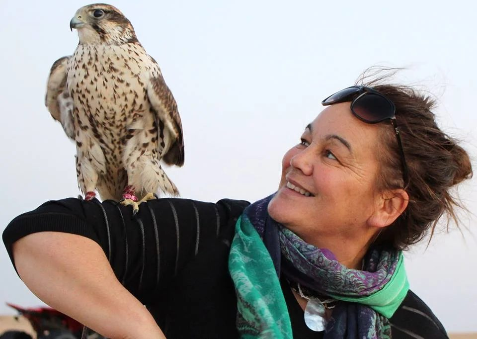
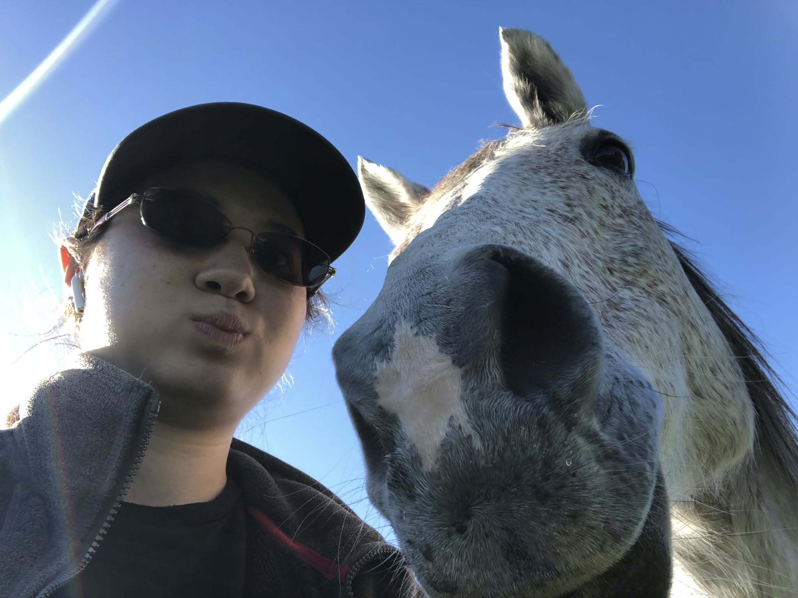

Mō MātouAbout▾
Ā Mātou MahiOur Work▾
Whakapā MaiContact▾
Ngā Hōiho — Ngā Kaimahi
Our Team
The horses are not tools. They are teachers, healers, and partners in this sacred work.
01 — Ngā Hōiho
Tomahawk
Protector · Teacher · Heart Horse
The Expression of the Unique Self
Tomahawk is a horse who carries his own story. Curious, distinctive, and wonderfully individual, he engages with the world in a way that quietly encourages others to do the same.
More than simply participating in the H.E.A.R.T.S. programme, Tomahawk is a relational teacher. Through his sensitivity, wisdom, and grounded presence, he invites people to reconnect with themselves and with the deeper truth of who they are. He has a remarkable gift for connection, often becoming a catalyst for moments of genuine warmth, emotional presence, and heartfelt engagement.
Whether through quiet companionship, gentle grooming, or simply standing alongside someone in need of connection, Tomahawk demonstrates that relationship does not always require words. He reminds us that healing and belonging can emerge through presence alone. In a world that often asks us to perform, achieve, or become something different, Tomahawk offers something simpler and far more profound: the invitation to just be.
Never one to overlook something unusual, Tomahawk is known for noticing what others might miss. With his wonderfully inquisitive nature and vivid imagination, he is always keeping an eye out for the unexpected, including the occasional dragon lurking in the shadows!
Within the H.E.A.R.T.S. herd, Tomahawk represents the unique self: the part of us that exists beyond expectations, labels, roles, and the pressure to fit in. He reminds us that our individuality is not something to hide or overcome, but something to honour and embrace.
Tomahawk teaches that belonging is not earned through becoming someone else. Rather, true belonging emerges when we are given the freedom and safety to be fully ourselves.
Through his quiet authenticity, Tomahawk becomes a mirror, reflecting back the innate worth, uniqueness, and individuality that lives within each of us. His presence encourages people to reconnect with their own identity, trust their own way of being, and remember that they are enough exactly as they are.
Tomahawk reminds us that we don't need to become someone else to belong. We simply need the freedom to be ourselves.
When Jenny went to buy him, she asked him if he wanted to come home with her. He tucked his head under her arm. The rest is history…

02 — Ngā Hōiho
Mystique
Nurturer · Caregiver · Mother
A natural caregiver, Mystique is the gentle heart of the herd. As the mother of Cruz and two other foals, she carries with her a history of love and dedication. Her self-reliance shines through in the way she effortlessly communicates her desires and cares for herself with grace.
She models what healthy boundaries and quiet strength look like — a living teacher of self-worth and relational care.
03 — Ngā Hōiho
Ollie
Koroua · Elder · Heart Horse
The Wisdom of Presence
At 35 years old, Ollie is the beloved elder of the H.E.A.R.T.S. herd. Over a lifetime of partnership with people, he has become something far greater than a horse. He is a quiet teacher, a trusted companion, and for many, a place of refuge.
There is a depth to Ollie that is difficult to put into words. His strength is neither loud nor demanding. It does not seek attention or recognition. Instead, it is found in his unwavering presence, his patience, and his remarkable ability to simply be with another without judgement or expectation.
Ollie asks nothing of anyone.
He does not require explanations, stories, or reasons. Whether someone arrives carrying joy, grief, uncertainty, or exhaustion, Ollie meets them exactly where they are. Beside him, people often discover they no longer need to hold themselves together quite so tightly.
Within H.E.A.R.T.S., we often say that if life has been heavy, if someone has left you feeling diminished, or if the world simply feels too much, you can always go and have an Ollie hug. Somehow, he has a way of absorbing the noise and returning people to themselves. His presence offers a rare sense of safety, reassurance, and belonging — not because he tries to fix anything, but because he reminds us that we are already enough.
Whether he is standing quietly beside a three-year-old meeting a horse for the first time or gently accompanying a ninety-three-year-old rediscovering connection, Ollie brings the same steadfast kindness to every encounter. We trust him completely, and time and again he proves worthy of that trust.
Within the H.E.A.R.T.S. herd, Ollie represents Strength. Not strength as power, control, or force, but strength expressed through groundedness, gentleness, consistency, and presence.
He is also the embodiment of healthy masculinity — the kind that protects without controlling, leads without dominating, and creates safety simply through its presence. Ollie teaches that true strength is not found in being the biggest voice in the room. It is found in the ability to remain calm, trustworthy, and present when others need us most.
He reminds us that some of life's greatest healers do not offer advice, answers, or solutions. They simply stay.
Through every season of his life, Ollie continues to show us that wisdom is not measured by what we know, but by how we make others feel when they are in our presence. And sometimes, when words are no longer needed, all you need is an Ollie hug.
Retirement suits him beautifully as he enjoys a well-deserved, carefree life. Ollie's earlier years were filled with adventure as Jenny's main horse — together they hunted, evented, and trekked, with his last great journey being through the rugged Kaimanawa country alongside Aotearoa's wild horses.
If H.E.A.R.T.S. has a heart horse, it is unquestionably Ollie.
04 — Ngā Hōiho
Indi
Self-Acceptance · Leadership · Boundaries
Indi is the matriarch of the herd, a mare whose presence is both commanding and deeply grounding. She carries herself with quiet confidence, knowing exactly who she is and where she stands. Rarely demanding attention, she nevertheless receives it. Her communication is subtle yet unmistakable, often expressed through the smallest gesture — a shift in posture, a softening of the eye, or the slightest flick of an ear. Her messages are clear, and she expects them to be understood and respected.
Indi embodies the essence of self-acceptance. She does not seek approval, nor does she reshape herself to meet the expectations of others. Instead, she offers a living example of what it means to stand comfortably in one's own truth. Through her presence, she teaches the importance of honouring our boundaries, respecting ourselves, and recognising that our worth is not dependent on external validation.
As an established leader within the herd, Indi creates stability through consistency. She understands relationship, personal space, and the delicate balance between connection and autonomy. Her leadership is not driven by dominance, but by clarity. She knows when to invite, when to guide, and when to firmly communicate a boundary. The herd trusts her because she is authentic, predictable, and true to herself.
For those who spend time with her, Indi offers powerful lessons in personal leadership. She invites us to consider where we give away our power, where we struggle to say no, and where we compromise our truth in order to belong. Through her quiet wisdom, she demonstrates that healthy relationships are built not through people-pleasing, but through honesty, respect, and clear communication.
Indi reminds us that belonging does not require us to become someone else. True belonging begins when we feel safe enough to be ourselves. Her presence encourages us to stand gently but firmly in our own space, trusting that authenticity creates its own sense of connection.
Indi's Wisdom
"Know who you are. Honour your boundaries. Trust your voice. You do not need permission to take up your rightful space."
05 — Ngā Hōiho
Venus
Love · Self-Worth · Unconditional Acceptance
Venus represents love, though perhaps not in the way people might expect.
A beautiful mare, she naturally draws people towards her. Many want to stroke her, connect with her, or shower her with affection. Yet Venus is just as likely to walk away. She isn't interested in receiving attention simply because someone wishes to give it.
Venus knows who she is.
She has a strong sense of self and is particular about how she likes things. A little bit of a princess, she enjoys her grooming, her meals, and having things just so. She is also clear about her boundaries. Those who have offered energy work have occasionally received a very definite response: no thank you. Venus does not accept something merely because it is offered, nor can she be persuaded into what doesn't feel right for her.
Yet there is another side to her.
Speak about a grandparent's love for a grandchild and her eyes soften instantly. They become gentle, warm and deeply expressive, as though she recognises a different quality of love altogether.
Perhaps the greatest gift Venus offers is an opportunity to explore our relationship with unconditional love, including how we love and accept ourselves.
We often want others to receive our affection, but can we allow them to be exactly who they are? Can we honour their boundaries, choices and individuality without needing them to be different? And can we offer ourselves the same grace?
Venus does not perform affection to make someone else feel comfortable. She does not abandon herself to meet another's expectations.
She is simply Venus.
Like all the horses in the H.E.A.R.T.S. herd, Venus carries her own wisdom and way of being.
She reminds us that love is not ownership, expectation or obligation. Sometimes love is allowing another to be entirely themselves.
And perhaps the deepest form of unconditional love begins there, with acceptance of others, and of ourselves.
06 — Ngā Hōiho · Son of Mystique
Cruz
Truth · Persistence · Authenticity
Cruz holds a very special place within the H.E.A.R.T.S. family. He is the only horse we have bred ourselves to become part of the programme, and he has spent his entire life here. He has never known another home, growing up alongside the people, horses, and relationships that have shaped the H.E.A.R.T.S. story.
His story also carries a unique piece of equine history. His sire was Florian, a horse featured in The Lord of the Rings films, and Cruz was Florian's final foal born with Mystique. While this connection is a special part of his legacy, it is Cruz's own character and presence that make him truly remarkable.
Cruz embodies Truth. He has an extraordinary ability to bring honesty into a situation, whether people are ready for it or not. If there is something that needs attention, Cruz is unlikely to overlook it. In true Cruz fashion, he often persists until his message has been received. Where some horses may offer a subtle hint before moving on, Cruz is more inclined to return to the lesson, gently but consistently inviting deeper awareness.
Through him, we learn that truth is not always comfortable. Sometimes it asks us to pause, reflect, and acknowledge what we may have been avoiding. Sometimes it requires patience, courage, and a willingness to look beyond our first reaction. Cruz teaches us that genuine growth often begins with honesty — both with ourselves and with others.
Alongside his determination is a wonderfully endearing side that reminds us not to take life too seriously. Cruz is known for sleeping completely flat out, often looking so convincingly lifeless that concerned onlookers have wondered if something is wrong. Yet a moment later, the unmistakable sound of his snoring confirms that he is simply enjoying a very deep and well-earned sleep.
When working with people, Cruz invites authenticity. He encourages us to stop hiding behind who we think we should be and to reconnect with what is real. His presence reminds us that truth is not about judgement. It is about alignment. It is about living in a way that honours who we are and what we know to be true.
Born here, raised here, and woven into the fabric of H.E.A.R.T.S., Cruz carries a unique place within our herd and our story. Through his persistence, honesty, and unmistakable personality, he reminds us that some messages are too important to be ignored.
Cruz's Wisdom
"Listen to the truth the first time. If you don't, life may keep bringing it back until you're ready to hear it."
"Cruz grew up watching healing happen. Now he is part of it."
The People
Guided by Jenny & a circle
of dedicated practitioners.
Our human team works in deep collaboration with ngā hōiho — bringing lived experience, clinical knowledge, and a profound commitment to culturally grounded care.

Founder
Jenny
Founder · Facilitator · Equine Practitioner
Jenny founded H.E.A.R.T.S. from a deep personal and professional calling — to create a space where those who carry the heaviest weight can find their way back to themselves, their whakapapa, and to life.
Her work is rooted in tikanga Māori, equine-assisted practice, and systemic family constellation work. She holds the medicine circle as a sacred space — one where healing does not need to be spoken to be felt.
Jenny collaborates closely with doctors, psychologists, and psychiatrists to bring truly integrated, whole-person care to every person she serves.

Equine Practitioner
Elena
Born and raised in Beijing, China, Elena comes from a rich Chinese and Russian heritage and was immersed from an early age in a blend of cultures, languages, and perspectives. Educated at the Russian Embassy School and having travelled internationally throughout her childhood, she developed a broad worldview and a deep appreciation for the many ways people connect with, experience, and understand the world around them.
Fluent in Mandarin, Russian, and English, Elena brings a unique cultural and linguistic perspective to her work, alongside a lifelong love of horses and a genuine commitment to the wellbeing of others.
After completing high school in 2017, Elena followed her passion for horses to Aotearoa New Zealand, where she undertook tertiary study in equine science. In 2021, she graduated from Massey University with a Bachelor of Agricultural Science, majoring in Equine.
It was during her studies that Elena first became connected with H.E.A.R.T.S., undertaking her university internship with the Trust. What began as an opportunity to gain practical industry experience soon evolved into a much deeper connection with the kaupapa, the horses, and the people who make H.E.A.R.T.S. such a special place.
Following graduation, Elena was delighted to return and work alongside Jenny, bringing together her academic knowledge, practical equine expertise, and a heartfelt desire to support the healing and growth journeys of others.
Over the past five years, Elena has become an integral part of the H.E.A.R.T.S. whānau. Her work combines a deep understanding of horse behaviour and welfare with a quiet, compassionate presence that helps create meaningful and transformative experiences for the individuals, tamariki, rangatahi, and whānau who engage with the programme.
Having completed her equine degree and accrued more than five years of hands-on experience working alongside clients within the H.E.A.R.T.S. model, Elena is now a certified H.E.A.R.T.S. Practitioner, qualified to facilitate client sessions. This certification recognises not only her equine knowledge and practical skills, but also her commitment to the values, philosophy, and relational approach that underpin the H.E.A.R.T.S. kaupapa.
Having made New Zealand her home, Elena continues to bring her unique background, knowledge, and perspective to a kaupapa centred on connection, relationship, restoration of mauri, and the healing potential of horse–human relationships.